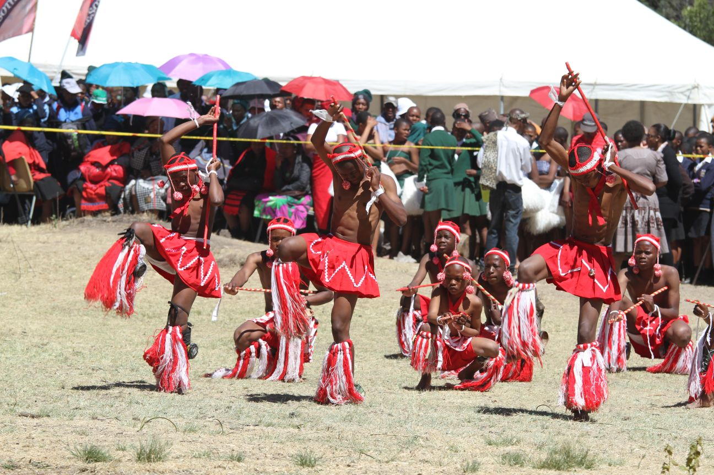

Tickets for the Morija Arts and Cultural Festival are affordable and accessible to a wide range of visitors. The festival aims to encourage both local and international tourists to attend and experience Basotho culture. Different ticket options are available to suit individuals, families and groups. Booking early is recommended to secure your place at this exciting event.
The registration process is simple and convenient for all visitors. Guests can quickly fill in their details and reserve their tickets in advance. The festival organizers ensure a safe and enjoyable environment for everyone attending. Do not miss the opportunity to be part of this amazing cultural experience.

Adults: M100
Children: M50
Group Discounts Available
Booking your ticket early ensures that you do not miss out on this popular event. It also helps you plan your visit in advance and avoid long queues on the day. Early booking guarantees a smoother and more enjoyable festival experience. Secure your spot today and be part of this exciting celebration.